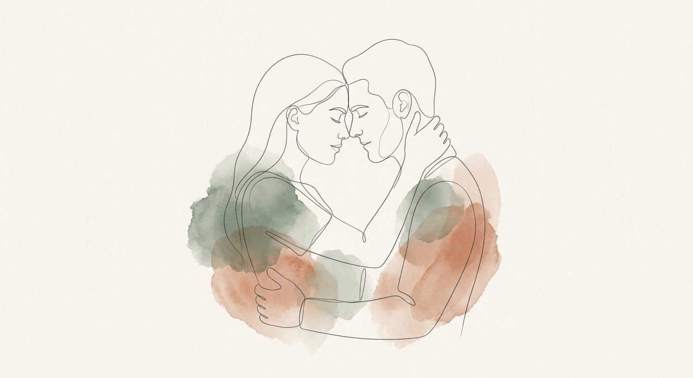
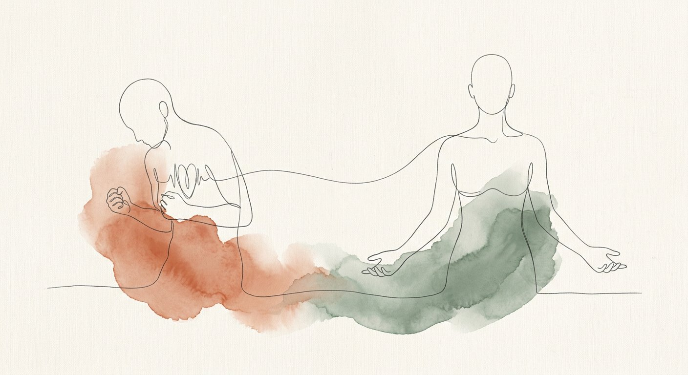
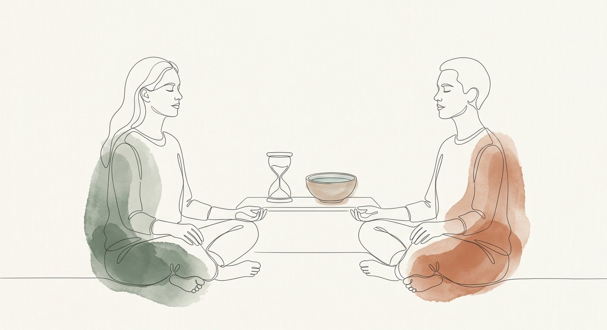
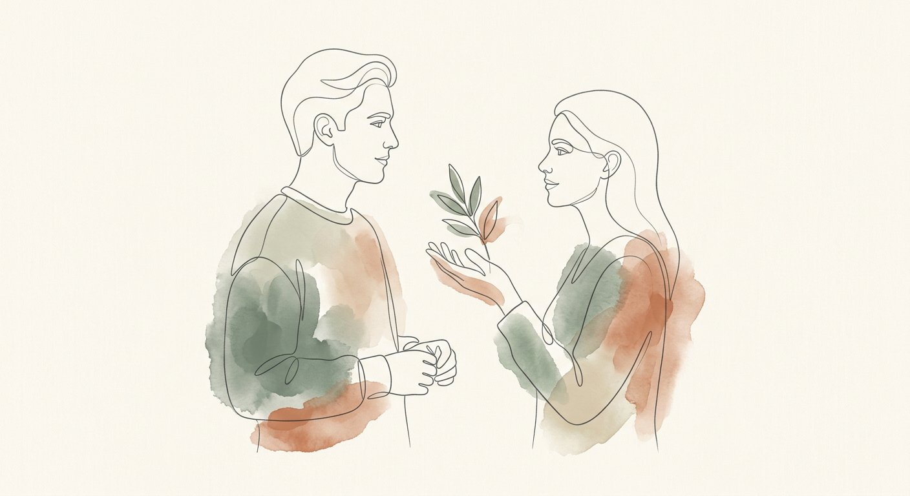
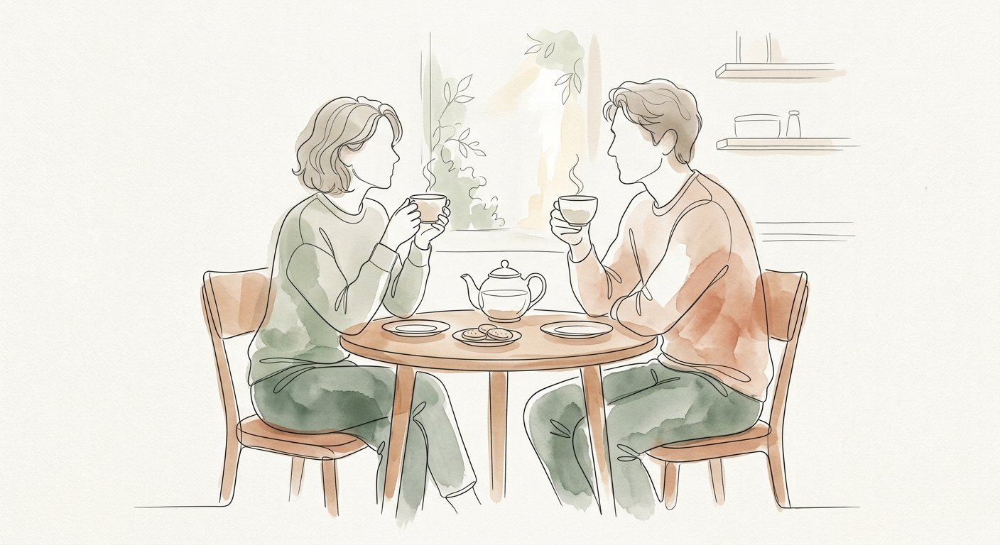
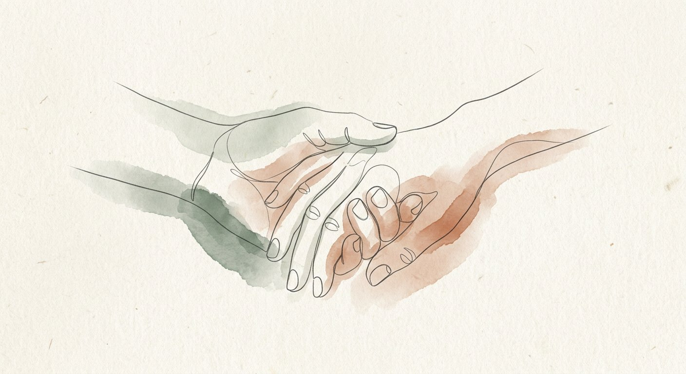
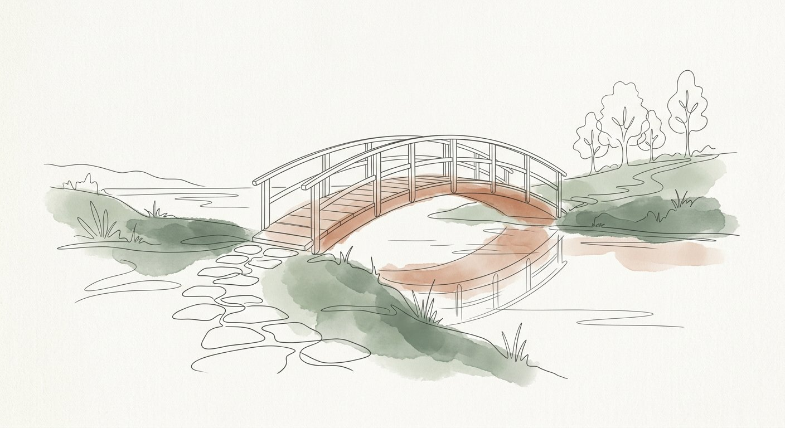

Клинический протокол остановки разрушительных ссор, снятия эмоционального затопления и возвращения к человеческому контакту.
Этот 7-страничный протокол разработан на базе эмоционально-фокусированной терапии (EFT) и нейробиологии стресса. Он создан для момента, когда градус диалога зашкаливает, а старые автоматизмы грозят разрушить близость.

В момент ссоры миндалевидное тело мозга перехватывает управление. Если пульс превышает 100 ударов в минуту, префронтальная кора (зона логики и сострадания) буквально отключается. Вы физиологически не способны услышать друг друга.
Контакт и ясность: Вы слышите нюансы интонации, можете шутить, признавать аргументы партнера и оставаться в тепле.
ЖЕЛТАЯ ЗОНА (Пульс 80–100)Появление напряжения: Дыхание учащается, челюсти сжимаются, фразы становятся короче. Сигнал: пора замедляться.
КРАСНАЯ ЗОНА (Пульс >100)Эмоциональный флудинг (Flooding): Ощущение глухоты к словам, туннельное зрение, желание ударить словом больнее или сбежать и хлопнуть дверью. Любой разговор здесь разрушителен.
Как ваше тело обычно сигнализирует о переходе в красную зону?

Тайм-аут — это не отвержение и не ледяное молчание (бойкот). Это договор о временной декомпрессии, чтобы сохранить отношения от взаимных ранений.
Гормонам стресса (адреналину и кортизолу) требуется минимум 20 минут, чтобы снизить концентрацию в крови и вернуть телу способность к эмпатии.
Что помогает лично вам быстрее всего физически остыть?

Если просто бросить: «Ты ненормальный(ая), я с тобой не разговариваю!» — это воспринимается партнером как нападение и взвинчивает тревогу. Экологичный стоппер строится по 3-частной формуле:
• «Мне очень дорог наш союз. Сейчас я на пределе и боюсь наговорить лишнего. Я отойду на 20 минут в другую комнату, подышу и вернусь к тебе».
• «Я вижу, как нам обоим больно. Давай нажмем паузу прямо сейчас. Я вернусь ровно в 19:30, чтобы мы спокойно договорили».

Не ждите разрушительного скандала, чтобы впервые применить протокол. Протестируйте его заранее в «мирное время».
1. В спокойный момент покажите партнеру этот протокол: «Я хочу, чтобы мы меньше ранили друг друга в спорах. Давай договоримся о сигнале паузы».
2. Выберите кодовое слово (например: «Пауза», «Маяк», «Чайник закипел»).
3. При первом мелком бытовом разногласии примените 10-минутный тестовый тайм-аут.

Сделайте скриншот этой карточки себе в галерею или поставьте на экран блокировки, чтобы она была под рукой в критический момент.
1. Глубокий соматический выдох через рот.
2. Вспомнить: «Мы по одну сторону баррикад против проблемы, а не против друг друга».
✓ Выпить стакан воды · Умыть лицо · Вернуться через 20 минут

Поздравляем! Вы освоили фундамент эмоциональной безопасности. Умение вовремя остановиться — это уже 50% спасения отношений от токсичного выгорания.
Если вы хотите перейти от тушения пожаров к настоящей близости: деконструировать ваш персональный цикл ссор, перевести претензии в уязвимые просьбы и внедрить 14 ежедневных ритуалов доверия.
⭐ Открыть Практикум Уровня 2 в боте